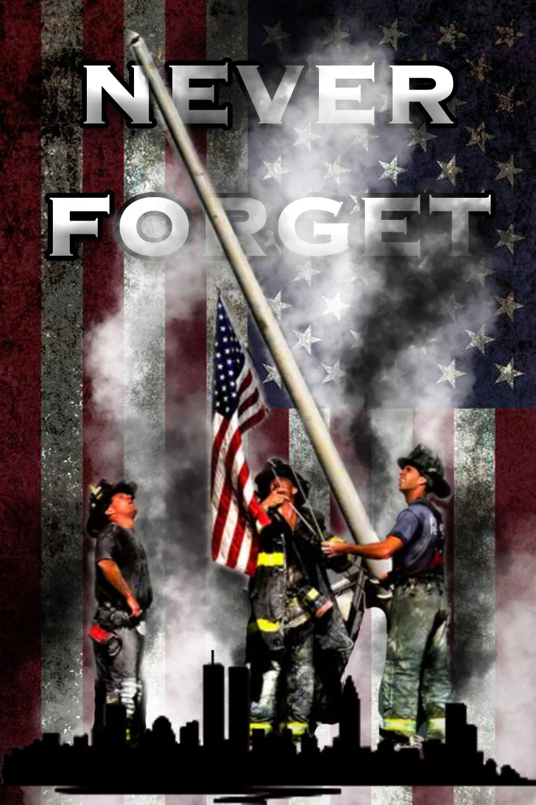

About
This website is a dedication to the many who lost their lives in the well-known tragedy 9/11. It was an incredibly sad day and even then not many know about it, or the very people who lost their lives in bravery or in a desperate attempt to save their own. This website was made originally because of an ELA project that I had assigned, but despite that I am still really proud of this. It doesn't only show the dedication I had to making a website, but to also let other people know about what happened on that day, to take time and remember those who passed in honor, as well as figuring out where they can help veterans, survivors, or anyone else related to 9/11.
